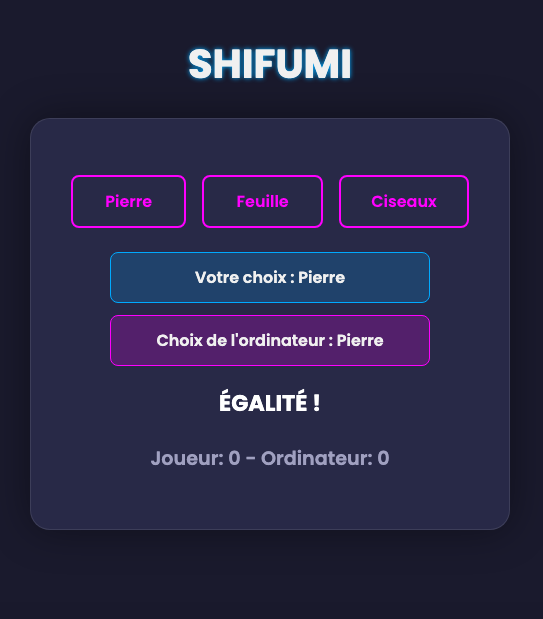

Aperçu du projet


Ce projet est une implémentation web moderne du jeu classique "Pierre-Feuille-Ciseaux" (Shifumi), développée en utilisant uniquement les technologies front-end fondamentales : HTML, CSS et JavaScript. L'application propose une expérience de jeu fluide et dynamique contre une intelligence artificielle, avec un design soigné et entièrement responsive.
Le code JavaScript est découpé en fonctions claires et dédiées, ce qui a été un excellent exercice de structuration :
demarrerJeu() : Initialise ou réinitialise les scores et l'interface.jouerManche() : Gère le déroulement d'un tour de jeu.verifierResultat() : Compare les choix et met à jour les scores.terminerPartie() : Gère la fin de partie et lance le redémarrage automatique.Ce projet a permis de renforcer la maîtrise de la manipulation du DOM, la gestion des événements et l'implémentation d'une logique de jeu complète en JavaScript.